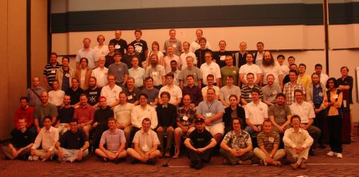

The 2006 Linux Kernel Summit
 |
| The group photo is available in medium and high resolution. |
The 2006 Linux Kernel Summit was scheduled for its traditional time: the two days prior to the opening of the Ottawa Linux Symposium. Also following tradition, LWN editor Jonathan Corbet, a member of the Summit program committee, was there and taking notes.
Day 1: July 17
Discussions held during the first day of the Kernel Summit include:
- The processor panel, wherein
three vendors discuss their future product plans with the kernel
developers.
- Mini-summit summaries: updates from
the storage, wireless networking, filesystems, memory management, and
power management mini-summits.
- Kernel quality and development
process. Andrew Morton looks into whether the kernel really has a
quality problem, and at ways to improve the way the kernel is
developed.
- The ioctl() interface,
dedicated to the proposition that this much-criticized system call is
not always evil.
- The kernel ABI, how to avoid breaking
it, and how to best maintain tools which are tightly coupled to the
kernel.
- Software suspend, what it will take to
make it work reliably, and whether user-space software suspend is a
good idea.
- Documentation: the current state of affairs and what can be done to improve it.
Day 2: July 18
The second and final day of the kernel summit included these sessions:
- Realtime: the state of
the realtime patches.
- Embedded systems and
what is required to better support them.
- Security; in particular,
the fate of AppArmor and the Linux Security Modules framework.
- Paravirtualization and containers and
how to make multiple virtualization solutions work in one kernel code
base.
- Automated testing: work
being done to catch kernel bugs before they affect users.
- The VFS layer.
- Scalability: how big can Linux go?
- DMA and IOMMU issues.
- Development process II; a final look at the process and the conclusion of the summit.
- The VFS layer.
In summary: in your editor's opinion, this was one of the more successful
kernel summits. The discussions were energetic and interesting, the topics
covered were relevant, and some real decisions were made. While there are
always improvements which can be made, it seems that the kernel process is
functioning well and the developers are, for the most part, working well
together. Things are going relatively smoothly, so the summit did as well.
| Index entries for this article | |
|---|---|
| Kernel | Kernel Summit |
| Conference | Kernel Summit/2006 |
Posted Jul 19, 2006 7:01 UTC (Wed)
by drosser (guest, #29597)
[Link]
Posted Jul 19, 2006 10:53 UTC (Wed)
by Los__D (guest, #15263)
[Link] (4 responses)
Posted Jul 19, 2006 11:14 UTC (Wed)
by alexbk (subscriber, #37839)
[Link] (3 responses)
Posted Jul 19, 2006 14:29 UTC (Wed)
by cventers (guest, #31465)
[Link]
:)
Posted Jul 20, 2006 8:39 UTC (Thu)
by gyles (guest, #1600)
[Link]
Posted Jul 20, 2006 14:27 UTC (Thu)
by bfeeney (guest, #6855)
[Link]
Here's how to fix the picture in a few easy steps The resulting image should look a lot better, though there may be some speckling (this is why pros use the Curves dialog). Here's my attempt: http://www.bfeeney.uklinux.net/images/group.jpg.
There's a good guide to this stuff at http://arstechnica.com/guides/tweaks/mystery.ars.
Posted Jul 19, 2006 13:21 UTC (Wed)
by dimi (subscriber, #2732)
[Link] (13 responses)
Posted Jul 19, 2006 15:26 UTC (Wed)
by joern (guest, #22392)
[Link] (12 responses)
Standing 1: X, Stephen Hemminger, X X X
Posted Jul 19, 2006 15:39 UTC (Wed)
by dimi (subscriber, #2732)
[Link]
Is Ingo in the picture?
Posted Jul 19, 2006 17:23 UTC (Wed)
by sepreece (guest, #19270)
[Link] (10 responses)
Standing 1: X, Stephen Hemminger, X X X
Posted Jul 20, 2006 0:29 UTC (Thu)
by sonnyrao (subscriber, #11351)
[Link] (9 responses)
Standing 1: X, Stephen Hemminger, X X X
Posted Jul 20, 2006 3:34 UTC (Thu)
by axboe (subscriber, #904)
[Link] (8 responses)
Posted Jul 20, 2006 5:30 UTC (Thu)
by lethal (guest, #36121)
[Link] (7 responses)
Posted Jul 20, 2006 11:24 UTC (Thu)
by Los__D (guest, #15263)
[Link]
Posted Jul 20, 2006 13:17 UTC (Thu)
by mbligh (subscriber, #7720)
[Link] (5 responses)
Posted Jul 20, 2006 19:40 UTC (Thu)
by johill (subscriber, #25196)
[Link] (1 responses)
Also, on the right, right of (almost behind) whoever-with-the-big-beard .. isn't that Herbert Xu?
johannes
Posted Jul 20, 2006 21:29 UTC (Thu)
by dimi (subscriber, #2732)
[Link]
Posted Jul 22, 2006 2:45 UTC (Sat)
by hansendc (subscriber, #7363)
[Link] (2 responses)
Posted Jul 25, 2006 18:26 UTC (Tue)
by aegl (subscriber, #37581)
[Link]
Posted Aug 1, 2006 14:00 UTC (Tue)
by jonmason (guest, #30646)
[Link]
Posted Jul 19, 2006 14:34 UTC (Wed)
by agk (guest, #23332)
[Link]
Posted Jul 20, 2006 5:49 UTC (Thu)
by richardfish (guest, #20657)
[Link] (1 responses)
Posted Jul 27, 2006 14:07 UTC (Thu)
by jimwelch (guest, #178)
[Link]
Typo on the picture captions, it says June 18.The 2006 Linux Kernel Summit
Wow... Kernel hackers sure are lousy at taking pictures (Or maybe at selecting a proper camera) :)The 2006 Linux Kernel Summit
Yeah, the picture could use a bit of brightness/contrast adjustment.The 2006 Linux Kernel Summit
-ENOPATCHThe 2006 Linux Kernel Summit
...and a serious white balance tweak!The 2006 Linux Kernel Summit
The 2006 Linux Kernel Summit
Please annotate the picture. Pretty please :)The 2006 Linux Kernel Summit
No promises on completeness, correctness or spaellingThe 2006 Linux Kernel Summit
Standing 2: X X X X X X X, Arnd Bergmann, X X
Standing 3: Thomas Gleixner, X X X, Jeff Dike, X X X X X X, Matthew Willcox, Alan Cox, Anton Blanchard, X X X
Sitting 1: X X, Linus Torvalds, X X, Paulus, X X, David Woodhouse, X X X X X X
Sitting 2: Martin Schwidefsky, Greg KH?, X X, Christoph Hellwig?, X, Ted Y T'so, James Bottomley, X X X X X X, Suparna?
Sitting 3: X X Andrew Morton X X X X X X
Thanks! The 2006 Linux Kernel Summit
A couple of additions:The 2006 Linux Kernel Summit
Standing 2: X X X X X X X, Arnd Bergmann, X X
Standing 3: Thomas Gleixner, X X X, Jeff Dike, X X X X X X, Matthew Willcox, Alan Cox, Anton Blanchard, X X X
Sitting 1: X X, Linus Torvalds, Paul Mundt, X, Paulus, X X, David Woodhouse, X X X X X X
Sitting 2: Martin Schwidefsky, Greg KH, X X, Matt Mackall, X, Ted Y T'so, James Bottomley, X X X X X X, Suparna?
Sitting 3: X X Andrew Morton X X Dave Jones, X X X
Couple More:The 2006 Linux Kernel Summit
Standing 2: X X X X Hugh Dickins, X X, Arnd Bergmann, X, Dipankar Sarma
Standing 3: Thomas Gleixner, X X X, Jeff Dike, X Tony Luck, Kumar Gala? X X X, Matthew Willcox, Alan Cox, Anton Blanchard, X X X
Sitting 1: X X, Linus Torvalds, Paul Mundt, X, Paulus, X X, David Woodhouse, X, Serge Hallyn, X X X , Suparna B.
Sitting 2: Martin Schwidefsky, Greg KH, Chris Mason?, Gerrit Huizenga, Matt Mackall, Arjan van Den, Ted Y T'so, James Bottomley, X X Andi Kleen, X X X
Sitting 3: X X Andrew Morton, Stephen Tweedie, X Dave Jones, X X X
Standing 1: Pavel Machek, Stephen Hemminger, Trond Myklebust, Ric Wheeler, Mat DomschThe 2006 Linux Kernel Summit
Standing 2: Andrew Patterson, X Nick Piggin X Hugh Dickins, Ken Chen, X, Arnd Bergmann,Tejun
Heo, Dipankar Sarma
Standing 3: Thomas Gleixner, X Takashi Iwai, Randy Dunlap, Jeff Dike, X Tony Luck, Kumar Gala?,
Christoph Lameter, Tony Jones, Matthew Willcox, Alan Cox, Anton Blanchard, BenH X X
Sitting 1: X X, Linus Torvalds, Paul Mundt, Dirk Hohndel, Paulus, Zachary Amsden, Ralf Baechle,
David Woodhouse, John Stultz, Serge Hallyn, X, Jens Axboe, Eric Biederman , Suparna B.
Sitting 2: Martin Schwidefsky, Greg KH, Chris Mason, Gerrit Huizenga, Matt Mackall, Arjan van Ven,
Ted Y T'so, James Bottomley, X X Andi Kleen, Len Brown, David Arlie, Jesse Barnes
Sitting 3: Alasdair Kergon, Wu Fengguang, Andrew Morton, Stephen Tweedie, Chris Wright, Dave
Jones, X X X
Standing 1: Pavel Machek, Stephen Hemminger, Trond Myklebust, Ric Wheeler, Mat DomschThe 2006 Linux Kernel Summit
Standing 2: Andrew Patterson, Greg Ungerer, Nick Piggin X Hugh Dickins, Ken Chen, X, Arnd Bergmann,Tejun
Heo, Dipankar Sarma
Standing 3: Thomas Gleixner, X Takashi Iwai, Randy Dunlap, Jeff Dike, Lee Schermerhorn, Tony Luck, X,
Christoph Lameter, Tony Jones, Matthew Willcox, Alan Cox, Anton Blanchard, BenH, Kumar Gala, X
Sitting 1: X X, Linus Torvalds, Paul Mundt, Dirk Hohndel, Paulus, Zachary Amsden, Ralf Baechle,
David Woodhouse, John Stultz, Serge Hallyn, Dave Hansen, Mel Gorman, Jens Axboe, Eric Biederman , Suparna B.
Sitting 2: Martin Schwidefsky, Greg KH, Chris Mason, Gerrit Huizenga, Matt Mackall, Arjan van Ven,
Ted Y T'so, James Bottomley, X John Linville, Andi Kleen, Len Brown, David Arlie, Jesse Barnes
Sitting 3: Alasdair Kergon, Wu Fengguang, Andrew Morton, Stephen Tweedie, Chris Wright, Sunil ??, Dave
Jones, X X X
Now that is patching at it's best! :)The 2006 Linux Kernel Summit
Standing 1: Pavel Machek, Stephen Hemminger, Trond Myklebust, Ric Wheeler, Mat DomschThe 2006 Linux Kernel Summit
Standing 2: Andrew Patterson, Greg Ungerer, Nick Piggin X Hugh Dickins, Ken Chen, X, Arnd Bergmann,Tejun
Heo, Dipankar Sarma
Standing 3: Thomas Gleixner, X Takashi Iwai, Randy Dunlap, Jeff Dike, Lee Schermerhorn, Tony Luck, X,
Christoph Lameter, Tony Jones, Matthew Willcox, Alan Cox, Anton Blanchard, BenH, Kumar Gala, X
Sitting 1: Zach Brown, X, Linus Torvalds, Paul Mundt, Dirk Hohndel, Paulus, Zachary Amsden, Ralf Baechle,
David Woodhouse, John Stultz, Serge Hallyn, Dave Hansen, Mel Gorman, Jens Axboe, Eric Biederman , Suparna B.
Sitting 2: Martin Schwidefsky, Greg KH, Chris Mason, Gerrit Huizenga, Matt Mackall, Arjan van Ven,
Ted Y T'so, James Bottomley, Michael Kerrisk, John Linville, Andi Kleen, Len Brown, David Arlie, Jesse Barnes
Sitting 3: Alasdair Kergon, Wu Fengguang, Andrew Morton, Stephen Tweedie, Chris Wright, Sunil ??, Dave
Jones, X, Kirill Korotaev, X
Can we have that as an imagemap like my wireless picture? :)The 2006 Linux Kernel Summit
I am working on such a picture, it should be ready later today.The 2006 Linux Kernel Summit
Standing 1: Pavel Machek, Stephen Hemminger, Trond Myklebust, Ric Wheeler, Mat DomschThe 2006 Linux Kernel Summit
Standing 2: Andrew Patterson, Greg Ungerer, Nick Piggin X Hugh Dickins, Ken Chen, X, Arnd Bergmann,Tejun
Heo, Dipankar Sarma
Standing 3: Thomas Gleixner, X Takashi Iwai, Randy Dunlap, Jeff Dike, Lee Schermerhorn, Tony Luck, X,
Christoph Lameter, Tony Jones, Matthew Willcox, Alan Cox, Anton Blanchard, BenH, Kumar Gala, X
Sitting 1: Zach Brown, X, Linus Torvalds, Paul Mundt, Dirk Hohndel, Paulus, Zachary Amsden, Ralf Baechle,
David Woodhouse, John Stultz, Serge Hallyn, Dave Hansen, Mel Gorman, Jens Axboe, Eric Biederman , Suparna B.
Sitting 2: Martin Schwidefsky, Greg KH, Chris Mason, Gerrit Huizenga, Matt Mackall, Arjan van Ven,
Ted Y T'so, James Bottomley, Michael Kerrisk, John Linville, Andi Kleen, Len Brown, David Arlie, Jesse Barnes
Sitting 3: Alasdair Kergon, Wu Fengguang, Andrew Morton, Stephen Tweedie, Chris Wright, Sunil ??, Dave
Jones, Cedric Le Goater, Kirill Korotaev, Oleg Nesterov
The lady standing in row 2 between Nick and Hugh is Kate Stewart from Freescale.The 2006 Linux Kernel Summit
Standing 1: Pavel Machek, Stephen Hemminger, Trond Myklebust, Ric Wheeler, Mat DomschThe 2006 Linux Kernel Summit
Standing 2: Andrew Patterson, Greg Ungerer, Nick Piggin X Hugh Dickins, Ken Chen, X, Arnd Bergmann,Tejun
Heo, Dipankar Sarma
Standing 3: Thomas Gleixner, X Takashi Iwai, Randy Dunlap, Jeff Dike, Lee Schermerhorn, Tony Luck, Asit Mallick,
Christoph Lameter, Tony Jones, Matthew Willcox, Alan Cox, Anton Blanchard, BenH, Kumar Gala, X
Sitting 1: Zach Brown, Roland Drier, Linus Torvalds, Paul Mundt, Dirk Hohndel, Paulus, Zachary Amsden, Ralf Baechle,
David Woodhouse, John Stultz, Serge Hallyn, Dave Hansen, Mel Gorman, Jens Axboe, Eric Biederman , Suparna B.
Sitting 2: Martin Schwidefsky, Greg KH, Chris Mason, Gerrit Huizenga, Matt Mackall, Arjan van Ven,
Ted Y T'so, James Bottomley, Michael Kerrisk, John Linville, Andi Kleen, Len Brown, David Arlie, Jesse Barnes
Sitting 3: Alasdair Kergon, Wu Fengguang, Andrew Morton, Stephen Tweedie, Chris Wright, Sunil ??, Dave
Jones, Cedric Le Goater, Kirill Korotaev, Oleg Nesterov
Another photo (44KB)
(2.5MB).
The 2006 Linux Kernel Summit
This group should never be allowed to congregate in the same state...much less a single room!!The 2006 Linux Kernel Summit
Why? Think M$ ninjas will attack?The 2006 Linux Kernel Summit